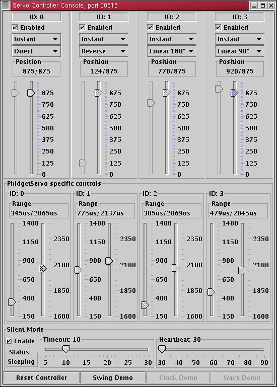

ServoMaster: Observations on USB
Phidget

Keep in mind that the hardware version for which this driver is
provided is different (later) from the one described on the site.
Since the Phidgets are evolving rather rapidly, the versioning,
capabilities discovery, and support are expected to be a standard
part of this driver.
Good things
- Reliable as hell. The manufacturer wants
me to make it fail, I couldn't.
- Simple to use. Plug in the USB, plug in
the servos, go.
- Versatile. One of the servos is powered by
the USB bus, so it is possible to start playing with it
right away even without external power supply.
- Precise. The actual controller is
controlled by the pulse timings it has to provide to the
servos. Usable range for the servos is somewhere from 200us
to 2100us, which makes the resolution of 1900 steps. If
your servo is capable of working in a wider pulse range,
you get more steps available.
- Generic. It is a USB HID device, enough
said.
- Fast. The bandwidth is limited by the
servo inertia, not by the protocol or interface.
- Flexible. You can control properties on
per-servo basis.
- Customizable. To the best of my
understanding, the manufacturer will provide custom
solutions - different number of servo outputs per board,
different protocol support and basically whatever you need.
Bad things
- As of now, it's still a write-only device. I don't think
it's such a big deal for this device -
otherwise, it's near perfect. The only extra ability that I
would like to see is the hardware level transition support,
but admittedly, that's a lot to ask ;)
Making it work
You have to get the suitable Java USB support. Currently, the code
is based on jUSB, which
makes it available only on Linux. Cross-platform solution is being
developed.
You have to use --with-phidget configure option to
enable the Phidget support (it is disabled by default), and
--with-jusb=<DIR> option to specify the root
directory of jUSB.
When you are ready to use it, don't forget to put
jusb.jar in your CLASSPATH and add the
directory where libjusb.so resides to your
LD_LIBRARY_PATH. If you are using the scripts supplied
with the source tarball (look into
${install_prefix}/bin, it's already taken care of.
Another thing to take care of is /proc/bus/usb
permissions. You probably don't want to run this code as root, so
either you have to manually modify the device permissions so you
have read/write access (you have to do it every time after the
device is plugged in or the system is rebooted), or use the USB
Permissions Daemon to maintain them for you. I haven't checked
the status of this with 2.4 kernel, though, it may be fixed already.
Conclusion
Beauty incarnated ;)